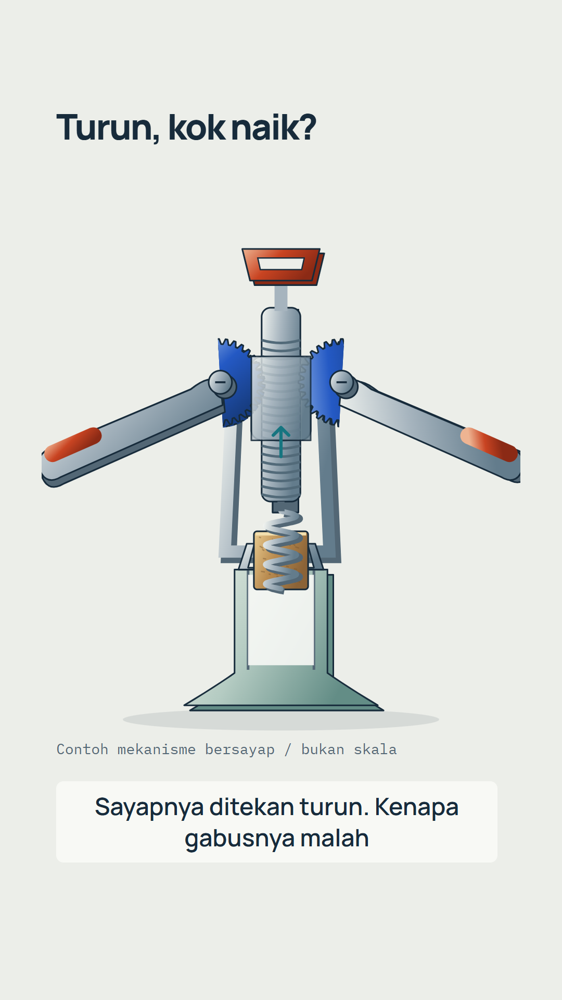
01: Turun, kok naik?
0.00–5.00s · estimate
Sayapnya ditekan turun. Kenapa gabusnya malah naik?

Sayapnya ditekan turun. Kenapa gabusnya malah naik?
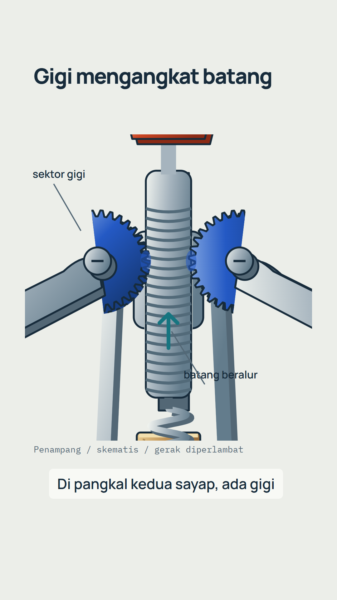
Di pangkal kedua sayap, ada gigi yang berkaitan dengan alur pada batang tengah.
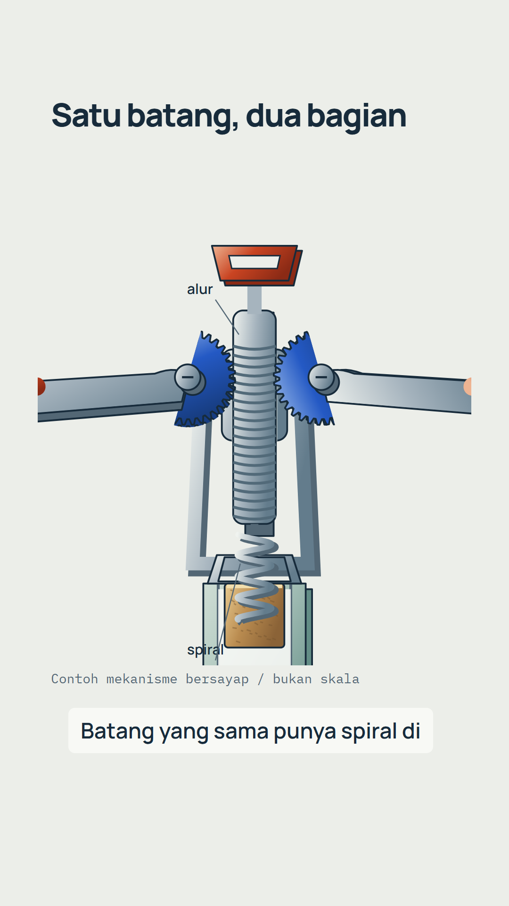
Batang yang sama punya spiral di bawahnya. Bagian inilah yang menancap ke gabus.
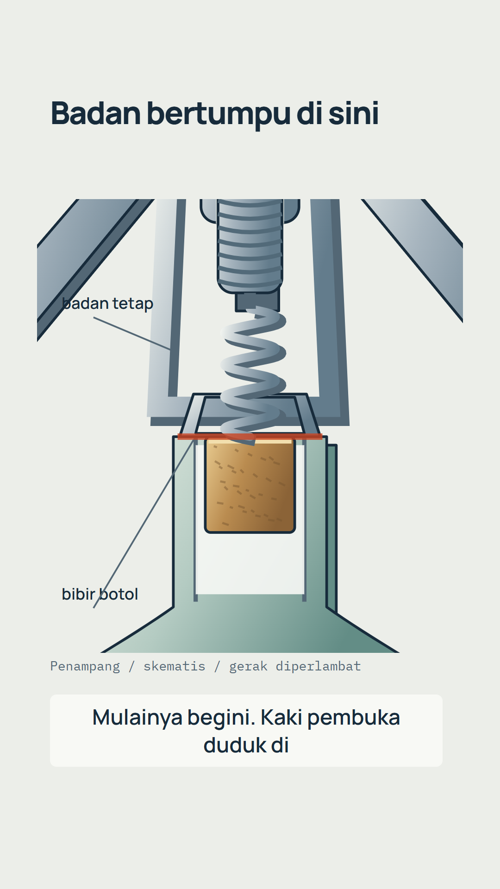
Mulainya begini. Kaki pembuka duduk di bibir botol, sementara ujung spiral menyentuh gabus.
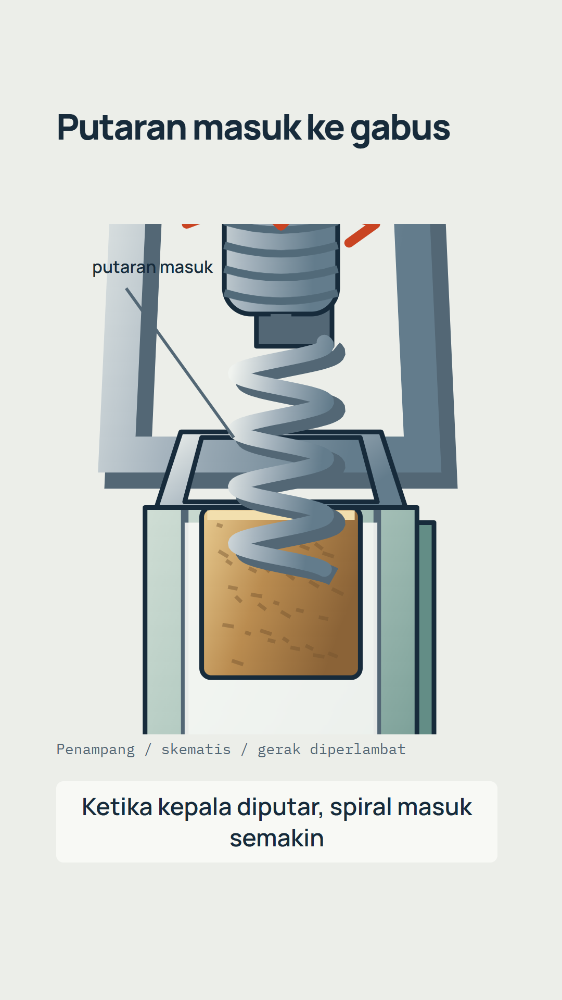
Ketika kepala diputar, spiral masuk semakin dalam. Batang tengah ikut bergerak turun.
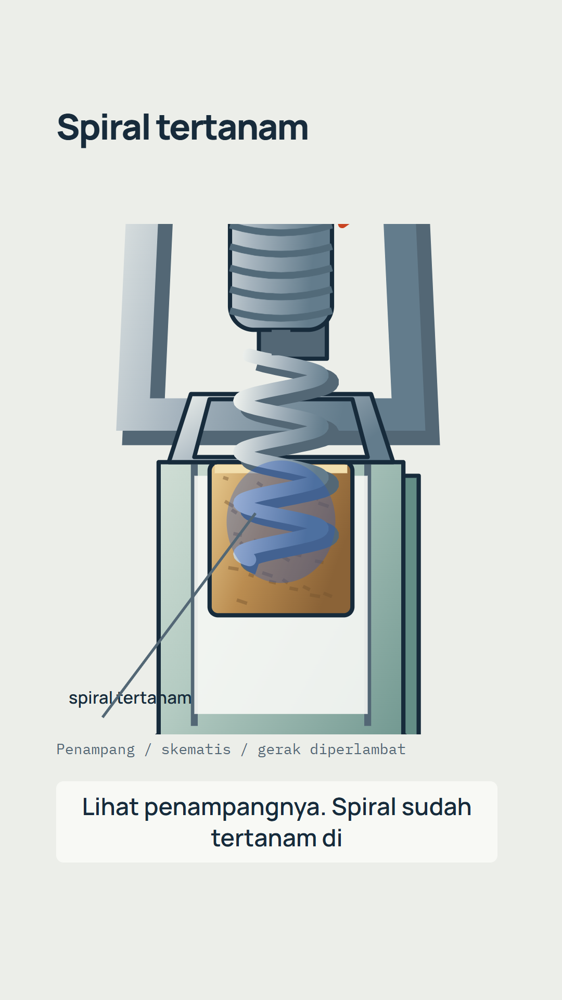
Lihat penampangnya. Spiral sudah tertanam di dalam gabus. Sambungan ini nantinya membawa gabus naik.
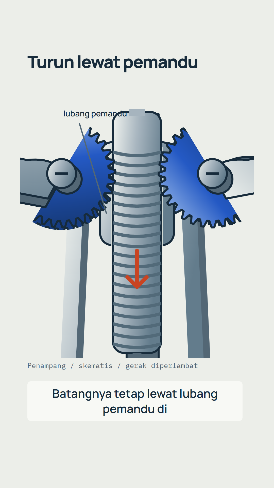
Batangnya tetap lewat lubang pemandu di badan alat. Jadi gerak turun ini mencapai bagian bergigi.
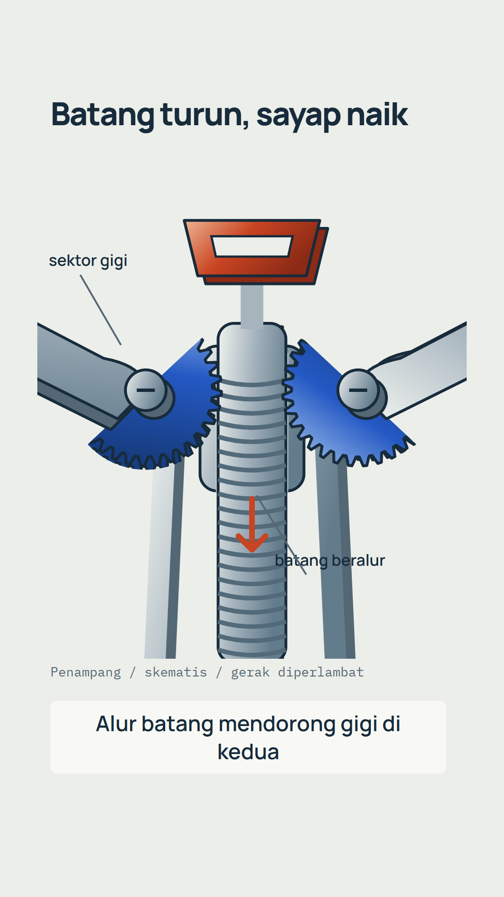
Alur batang mendorong gigi di kedua sisi. Gigi berputar bersama sayap, mengelilingi porosnya.
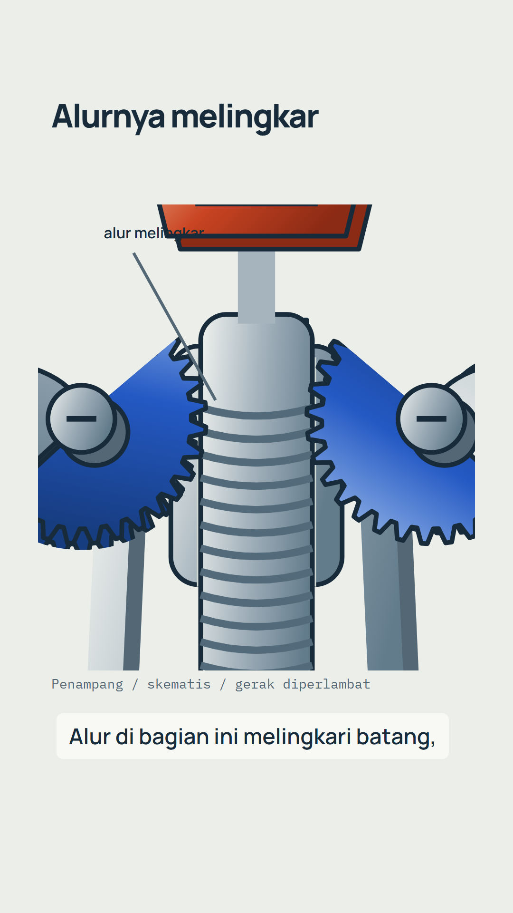
Alur di bagian ini melingkari batang, berbeda dari spiral penusuk di bawah. Keduanya punya tugas berbeda.
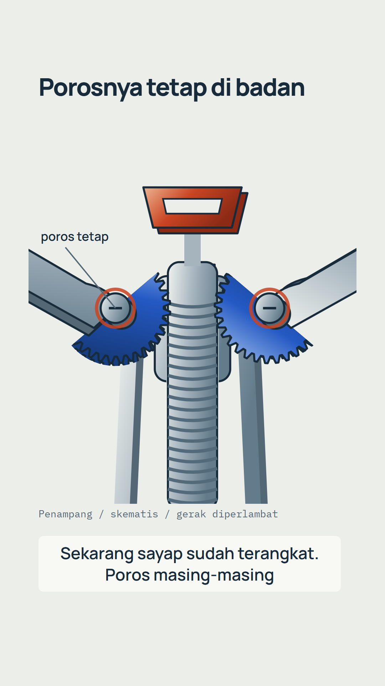
Sekarang sayap sudah terangkat. Poros masing-masing tetap terpasang pada badan pembuka. Batang tengah masih bisa bergeser.
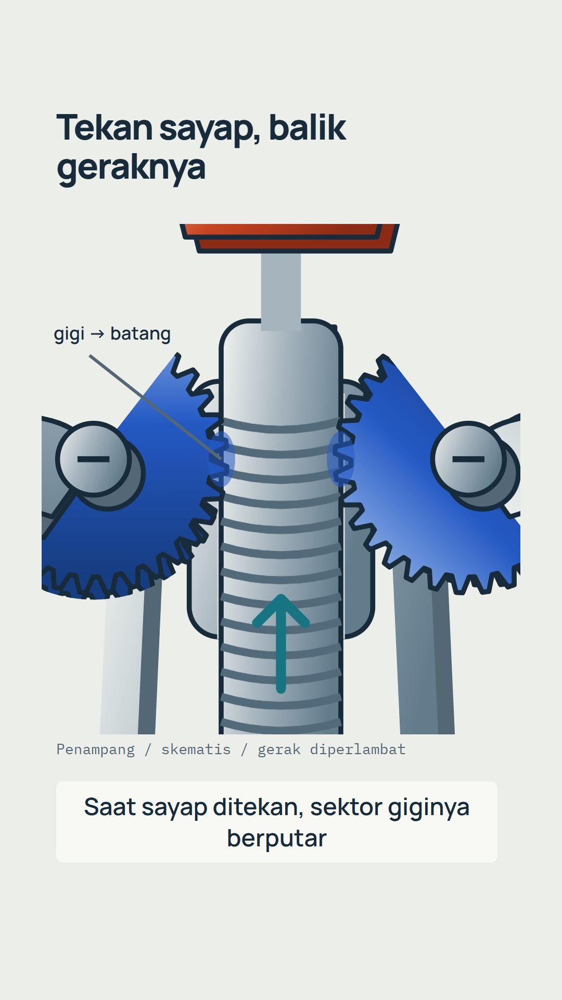
Saat sayap ditekan, sektor giginya berputar ke arah sebaliknya. Perhatikan titik pertemuannya: batang terdorong ke atas.
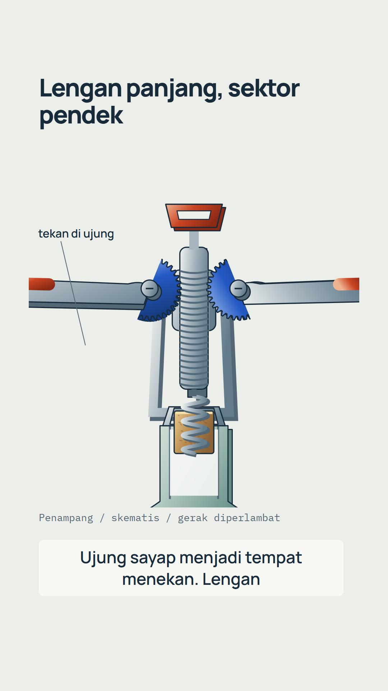
Ujung sayap menjadi tempat menekan. Lengan yang panjang memutar sektor bergigi yang lebih kecil di dekat poros.
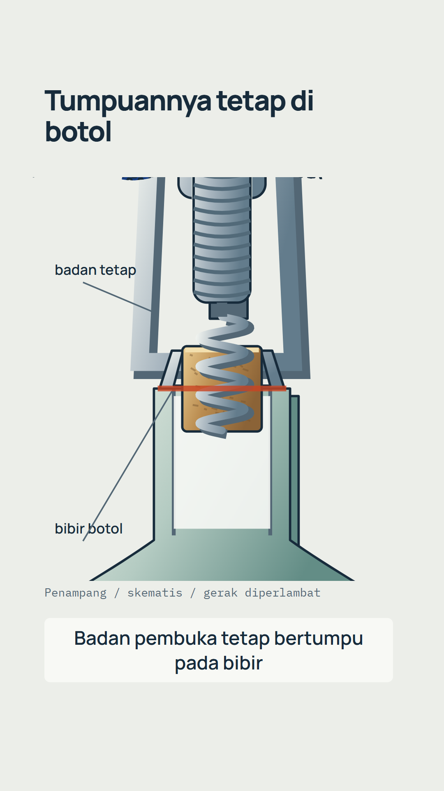
Badan pembuka tetap bertumpu pada bibir botol. Jadi batang bisa naik relatif terhadap botol yang ditahan.
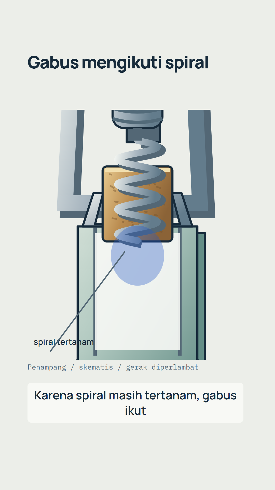
Karena spiral masih tertanam, gabus ikut tertarik. Gerak gigi diteruskan sepanjang batang hingga ke gabus.
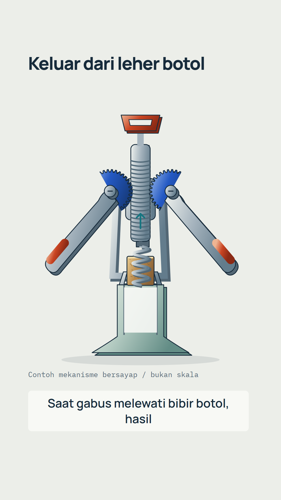
Saat gabus melewati bibir botol, hasil rangkaian gerak tadi terlihat: gabus sudah terangkat.
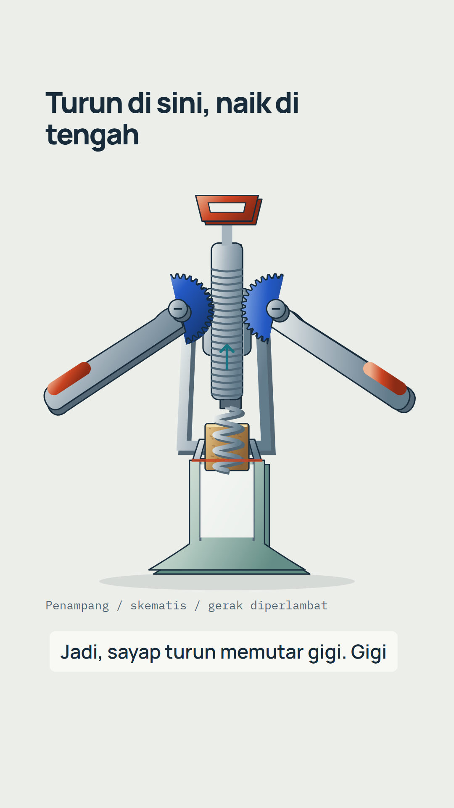
Jadi, sayap turun memutar gigi. Gigi menaikkan batang. Dan spiral membawa gabus keluar.